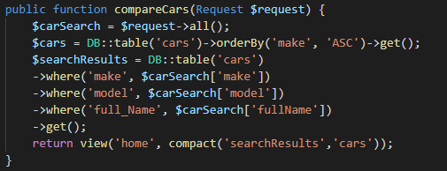

The first task I had for this sprint was to create the migration and table for cars, as the scope of our project was changed from games to cars. This was a fairly straight forward implementation as I had already create migrations, however the seeder was something new that I learnt this sprint. I had gotten tired of repopulating our database after every new migration, so I decided to research how this could be automated. Once I had learnt about them, implementing seeders went quite smoothly.
This ticket took the majority of the sprint to figure out a way of working, I intially investigated using ajax to render in sequentially the possible objects, but as the sprint deadline started approaching, I realized It was unlikely that I was going to be able to implement this story using ajax, so I instead implemented it in the Controller Class
This meant that the story was implemented for the client presentation, but im not particularly happy with it as it requires the user to fully know what car they are searching for and will only return one record from the database. If I wasnt working in a sprint style working environment, this is one feature that I would want to continue working on to improve.
As this was the first sprint after a two week break, I was happy with how quickly I got my intial tasks done, but I'm rather disappointed in the change of topic as alot of my work from previous sprints is no longer applicable to the new project
In this sprint, I had a task that if left uncompleted, would affect my team mates abilitys to do work on the project. I decided to prioritise this task and got it finished and merged within the first three days of the sprint. This decision was informed based on my previous sprint when I had left a task to later than I should and potentially slowed down my teams progress.
I left the decision to change technologies for the car filtering to quite late in the sprint, This meant that I ran out of time to improve my actual implementation of filtering, and I handed in a product that works but not to a standard that Im super proud of.
The lesson this sprint was ometimes its better to cut your losses despite the time invested into a feature. Because I invested so much time into doing a feature a particular way that I ultimatly didnt get working, when I finally did decide close to the end of the sprint to try a different approach, I got it working but only to the lowest level of what could be considered working as I ran out of time. I will aim to apply this lesson in future sprints by identifying how long I have been attempting a problem a certain way, and then begin investigating other ways that might be easier to implement or better designed implementations
The largest barrier I encountered this sprint was the lack of tutorials or examples implementing what I was aiming to achieve. This combined with not having touched laravel in around three weeks meant that I worked slowly, and took longer than usual for meaningful progess. I will need to keep this speed of working in mind for next sprint, as I have several assignments due and if I can't keep pace in all of the classes I risk letting the team down and not delivering my user stories.